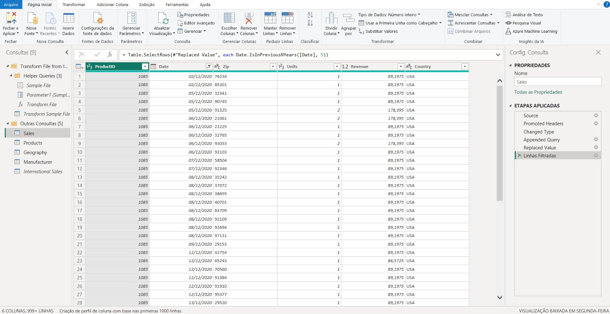
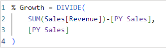
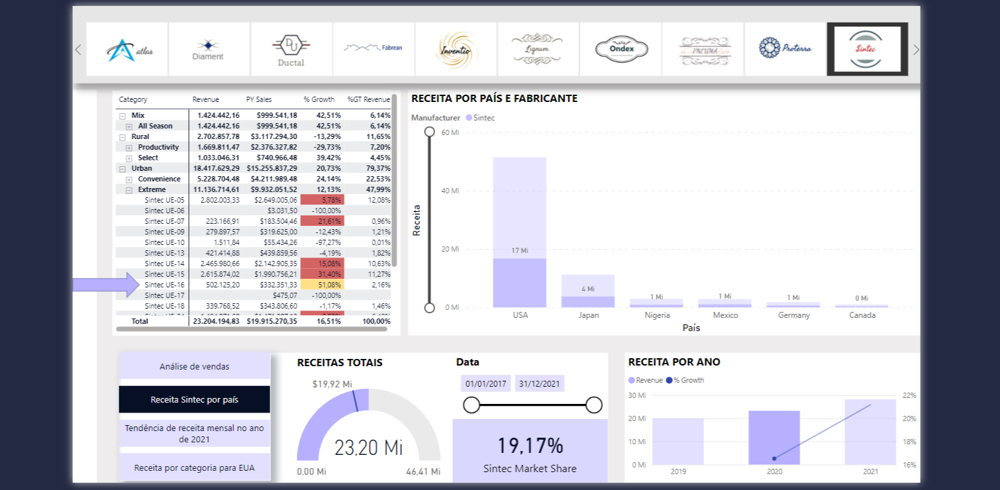
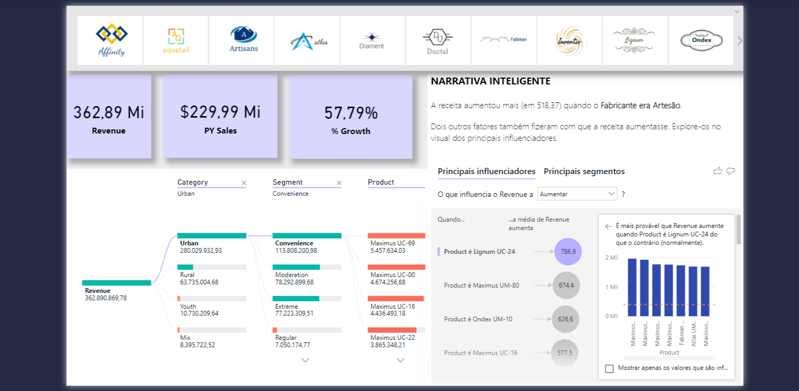
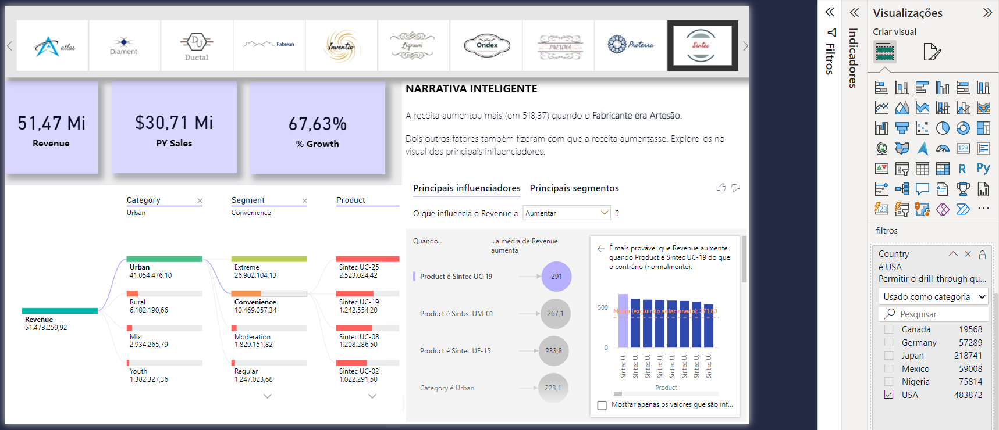
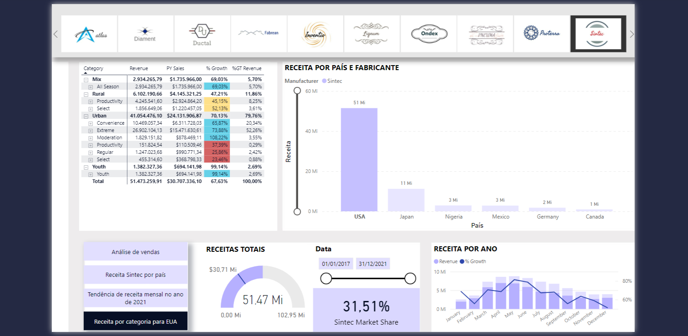
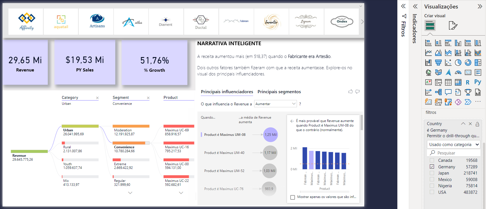
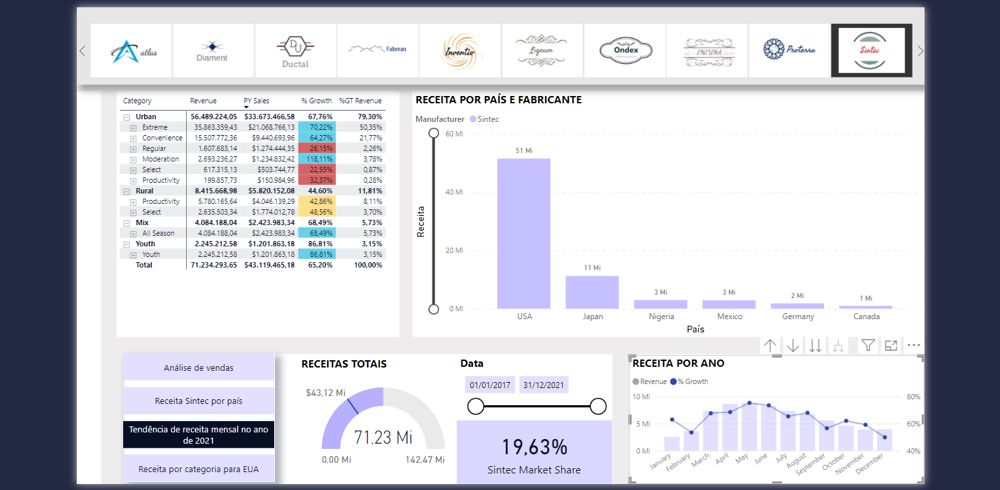
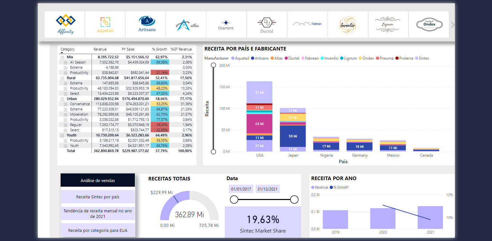

Detalhes do Projeto
Objetivo
Este projeto tem como objetivo fornecer uma visão estratégica sobre as vendas e a participação de mercado da empresa Sintec em comparação aos fabricantes concorrentes. O dashboard oferece insights tanto sobre o desempenho interno dos produtos quanto sobre a competitividade externa no mercado. Com base nos dados, os usuários empresariais podem tomar decisões informadas e implementar ações para melhorar resultados, identificar tendências e ajustar estratégias.
Principais ferramentas e metodologias utilizados
Para alcançar o objetivo, as seguintes ferramentas, metodologias e base de dados foram empregadas:
- Base de dados:
- Planilhas em Excel: as tabelas Geography, Manufacture e Products, exportadas da planilha bi_dimensions.
- Arquivo CSV de vendas: o arquivo sales.csv contém dados essenciais para a análise de receitas e tendências de vendas.
- Conexão com pastas: utilizando o recurso Folder Connect no Power BI, foi criada uma conexão com a pasta
Internacional Sales . - Conceitos de ETL (Extract, Transform, Load): os dados foram extraídos, transformados e carregados no Power BI para garantir consistência, qualidade e integração entre as diferentes fontes. 
- Medidas DAX: foram criadas medidas personalizadas para cálculos avançados, como crescimento de receita, média de vendas por fabricante, e participação de mercado em diferentes regiões. 
- Resposta a questionamentos críticos: combinando essas ferramentas, é possível responder perguntas-chave, como: Qual é o % de crescimento do produto Sintec UE-16 na categoria Extreme para o ano de 2020? 
- Visuais baseados em IA: utilizados para identificar padrões ocultos, realizar análises preditivas e detectar tendências nos dados, fornecendo insights além da simples visualização estáticas. 
- Resposta a questionamentos críticos: combinando essas ferramentas, é possível responder perguntas-chave, como: Nos EUA, quanto a receita média aumenta quando o produto é Sintec UC-19? 
Fig. 1: Dados extraídos, carregados e transformados no Power BI.
Todas as bases de dados foram acessadas a partir do site Amazon S3, proporcionando uma base densa e robusta, com tabelas que possuem mais de 1000 linhas. Essa densidade de dados contribuiu para extrair insights valiosos e detalhados.
Fig. 2: KPI que monitora o crescimento de vendas.
Com a %Growth, foi possível visualizar o desempenho da receita ao longo de períodos específicos. Isso revelou não apenas os produtos em maior crescimento, mas também as regiões com o maior potencial de retorno sobre investimentos.
Fig. 4: Com o gráfico de receita por ano filtrado para o ano de 2020 e o fornecedor Sintec selecionado foi possível observar que a %Growth para o produto Sintec UE-16 naquele ano é de 51,08%.
Fig. 3: Insights Avançados usando visuais baseados em IA.
Com a Árvore de Decomposição, identifiquei os fatores que mais influenciam o aumento da receita do fabricante Sintec. Já os Principais Influenciadores ajudaram a compreender quais os produtos ou regiões têm maior impacto nas vendas, orientando estratégias específicas.
Fig. 4: Com a ferramenta drill-through foi possível filtrar o país, o fornecedor Sintec foi selecioado e assim observou-se que a receita média para o produto Sintec UC-19 aumenta em 291.
Análise
Agora com um relatório interativo os executivos da Sintec podem usar para fazer vendas, análise em comparação com seus principais concorrentes no mercado e tomar as medidas correstas com base em seus dados. Usando este relatório, a equipe executiva da Sintec pode facilmente se aprofundar em seus dados históricos de vendas e obter insights avançados de seus dados. Isso lhes permitirá tomar decisões de negócio mais informadas, não apenas obtendo os insights mais, também, executando as ações no momento certo.
Principais perguntas respondidas:
- O fabricante Sintec tem um participação de mercado de 31,51% nos EUA e é lider em comparação com outros fabricantes. 
- Um descoberta crucial é que o princial concorrente da Sintec são os artesãos, gerando mais de 50% da participação de mercado em comparação com os outros quatro fabricantes na Alemanha. 
- O primeiro trimestre de 2021 viu o maior crescimento percentual de 19,63% em comparação com o ano passado. 
Fig. 2: Participação da Sintec no mercado.
Fig. 3: Analisando concorrentes.
Fig. 2: Analisando o crecimento trimestral de 2021.
Esses questionamentos orientaram as análises e trouxeram à tona valiosos insights que podem direcionar ações estratégicas para melhorar a retenção de clientes.
Principais descobertas
Foram abordados tópicos desde integração de dados, transformação, modelagem, análise exploratória de dados, cálculo e visualização DAX.
Fig. 4: Dashboard de análise de vendas.
Fig. 4: Dashboard de visuais com uso de IA.